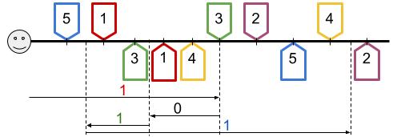

Making every vaccine available to the entire world population is a complicated problem in many respects. Ñambi is leading the charge to optimize delivery. To reduce the access barriers as much as possible, she is trying to have automated robots deliver and apply vaccines directly in patients' homes.
In the current iteration, the robot that Ñambi is designing will work on a single street that runs from west to east. As such, the robot accepts a single command 'move $$$x$$$ meters'. If $$$x$$$ is positive, the robot moves $$$x$$$ meters to the east. If $$$x$$$ is negative, the robot moves $$$-x$$$ meters to the west.
The robot is loaded at the start of the day with the information about all immunizations it must provide that day. Each of these pieces of information consists of the current location of the vaccine, for pickup, and the location of the patient that must receive it, for delivery. Each vaccine is custom-made for one patient. Of course, the delivery location of a vaccine is never the same as its own pickup location. The robot must pick up the vaccine before it delivers it to the patient.
The robot is programmed to automatically pick up and load onto its cargo area vaccines when it passes through their pickup locations for the first time. The robot is also programmed to deliver the vaccine to its recipient as soon as it passes through their location if the vaccine was already picked up. Ñambi wants to track how many vaccinations happen after each movement command. A vaccination happens when the vaccine is delivered. Notice that the vaccine might be picked up during any of the previous commands, or during the same command, but before delivery.
The following picture illustrates one possible scenario (Sample Case #1 below). The smiley face represents the initial position of the robot, and the long black line is the street. The marks above the line are the pickup locations and the marks below are the delivery locations. Finally, the arrows below represent the moves the robot makes, in order from top to bottom, labeled with how many deliveries are completed during the move.

This is what happens during each move, in order:
Notice that vaccine $$$2$$$ and $$$4$$$ were picked up but not delivered because the delivery location of vaccine $$$2$$$ was never reached, and the delivery location of vaccine $$$4$$$ was not reached after the vaccine had been picked up.
Given the list of immunizations to be given and the list of moving commands to be executed by the robot in order, compute how many vaccinations are completed after each command.
The first line of the input gives the number of test cases, $$$\mathbf{T}$$$. $$$\mathbf{T}$$$ test cases follow. Each test case consists of $$$4$$$ lines. The first line of a test case contains $$$2$$$ integers $$$\mathbf{V}$$$ and $$$\mathbf{M}$$$, the number of vaccinations and the number of move commands.
The second line of a test case contains $$$\mathbf{V}$$$ integers $$$\mathbf{P_1}, \mathbf{P_2}, \dots, \mathbf{P_V}$$$, representing that the $$$i$$$-th vaccine must be picked up exactly $$$\mathbf{P_i}$$$ meters to the east of the robot's initial location. Note that several vaccines can have the same pickup location.The third line contains $$$\mathbf{V}$$$ integers $$$\mathbf{D_1}, \mathbf{D_2}, \dots, \mathbf{D_V}$$$, representing that the $$$i$$$-th vaccine must be delivered exactly $$$\mathbf{D_i}$$$ meters to the east of the robot's initial location. Note that several vaccines can have the same delivery location.
The final line of a test case contains $$$\mathbf{M}$$$ integers $$$\mathbf{X_1}, \mathbf{X_2}, \dots, \mathbf{X_M}$$$, where the absolute value of $$$\mathbf{X_j}$$$ is the number of meters the robot must move for the $$$j$$$-th movement command. The $$$j$$$-th move must be towards the east if $$$\mathbf{X_j}$$$ is positive, and towards the west if it is negative. Notice that the vaccinations can happen in an order different than the numbering of the input, but movement commands happen in the given order.
For each test case, output one line containing
Case #$$$x$$$: $$$y_1 ~ y_2 ~ \dots ~ y_{\mathbf{M}}$$$,
where $$$x$$$ is the test case number (starting from 1) and $$$y_j$$$ is the number of vaccinations
completed while performing the $$$j$$$-th given movement command.
Memory limit: 2 GB.
$$$1 \le \mathbf{T} \le 100$$$.
$$$1 \le \mathbf{P_i} \le 10^9$$$, for all $$$i$$$.
$$$1 \le \mathbf{D_i} \le 10^9$$$, for all $$$i$$$.
$$$\mathbf{P_i} \neq \mathbf{D_i}$$$, for all $$$i$$$.
$$$-10^9 \le \mathbf{X_j} \le 10^9$$$, for all $$$j$$$.
$$$\mathbf{X_j} \ne 0$$$, for all $$$j$$$.
Time limit: 20 seconds.
$$$1 \le \mathbf{V} \le 100$$$.
$$$1 \le \mathbf{M} \le 100$$$.
Time limit: 40 seconds.
$$$1 \le \mathbf{V} \le 10^5$$$.
$$$1 \le \mathbf{M} \le 10^5$$$.
4 5 4 121 312 271 422 75 199 464 160 234 368 271 -109 -70 371 2 2 1 3 4 4 4 -1 2 2 1 4 4 3 4 -1 1 10 1 2 -987654321 -987654321 -987654321 -987654321 -987654321 987654321 987654321 987654321 987654321 987654323
Case #1: 1 0 1 1 Case #2: 2 0 Case #3: 1 1 Case #4: 0 0 0 0 0 0 0 0 0 1
Sample Case #1 is the one explained and illustrated in the problem statement.
In Sample Case #2 and Sample Case #3, notice that it is possible to pick up and deliver vaccines in the same move only if the pickup place is visited first. In addition, notice that it is possible pick up and to deliver exactly as a move is ending.
Sample Case #4, the robot moves $$$987654321$$$ meters to the west five times, then $$$987654321$$$ meters to the east four times, then $$$987654323$$$ meters to the east. The only pickup and delivery are both made in the final move. Note that the commands can be very extreme so the robot can be at some point very far away from its initial position, either west or east.